Two-dimensional histogram classification based on non-negative matrix factorization
This notebook shows the proof-of-principle of an NMF model on 2D monitoring elements.
It also shows how to retrieve and use information from OMS.
### imports
# external modules
import sys
import os
import numpy as np
import matplotlib.pyplot as plt
# local modules
sys.path.append('../utils')
import dataframe_utils as dfu
import plot_utils as pu
import hist_utils as hu
import generate_data_2d_utils as g2u
import json_utils as jsonu
sys.path.append('../src')
import DataLoader
sys.path.append('../src/classifiers')
import NMFClassifier
sys.path.append('../omsapi')
from get_oms_data import get_oms_api,get_oms_data,get_oms_response_attribute
2022-07-26 17:24:40.584465: W tensorflow/stream_executor/platform/default/dso_loader.cc:64] Could not load dynamic library 'libcudart.so.11.0'; dlerror: libcudart.so.11.0: cannot open shared object file: No such file or directory; LD_LIBRARY_PATH: /cvmfs/sft.cern.ch/lcg/releases/MCGenerators/thepeg/2.2.1-8d929/x86_64-centos7-gcc8-opt/lib/ThePEG:/cvmfs/sft.cern.ch/lcg/releases/MCGenerators/herwig++/7.2.1-f3599/x86_64-centos7-gcc8-opt/lib/Herwig:/cvmfs/sft.cern.ch/lcg/views/LCG_101swan/x86_64-centos7-gcc8-opt/lib/python3.9/site-packages/torch/lib:/cvmfs/sft.cern.ch/lcg/views/LCG_101swan/x86_64-centos7-gcc8-opt/lib/python3.9/site-packages/tensorflow:/cvmfs/sft.cern.ch/lcg/views/LCG_101swan/x86_64-centos7-gcc8-opt/lib/python3.9/site-packages/tensorflow/contrib/tensor_forest:/cvmfs/sft.cern.ch/lcg/views/LCG_101swan/x86_64-centos7-gcc8-opt/lib/python3.9/site-packages/tensorflow/python/framework:/cvmfs/sft.cern.ch/lcg/releases/java/8u222-884d8/x86_64-centos7-gcc8-opt/jre/lib/amd64:/cvmfs/sft.cern.ch/lcg/views/LCG_101swan/x86_64-centos7-gcc8-opt/lib64:/cvmfs/sft.cern.ch/lcg/views/LCG_101swan/x86_64-centos7-gcc8-opt/lib:/cvmfs/sft.cern.ch/lcg/releases/gcc/8.3.0-cebb0/x86_64-centos7/lib:/cvmfs/sft.cern.ch/lcg/releases/gcc/8.3.0-cebb0/x86_64-centos7/lib64:/cvmfs/sft.cern.ch/lcg/releases/binutils/2.30-e5b21/x86_64-centos7/lib:/usr/local/lib/:/cvmfs/sft.cern.ch/lcg/releases/R/3.6.3-dfb24/x86_64-centos7-gcc8-opt/lib64/R/library/readr/rcon
2022-07-26 17:24:40.584531: I tensorflow/stream_executor/cuda/cudart_stub.cc:29] Ignore above cudart dlerror if you do not have a GPU set up on your machine.
### load the histograms
# note: this cell assumes you have a csv file stored at the specified location,
# containing only histograms of the specified type;
# see the tutorial read_and_write_data for examples on how to create such files!
histname = 'clusterposition_zphi_ontrack_PXLayer_1'
datadir = '../data'
dloader = DataLoader.DataLoader()
# read training data
filename = 'DF2017B_'+histname+'_subset.csv'
histdf = dloader.get_dataframe_from_file( os.path.join(datadir, filename) )
print('raw input data shape: {}'.format( dfu.get_hist_values(histdf)[0].shape ))
histdf = dfu.select_dcson(histdf)
(hists_ref) = hu.preparedatafromdf(histdf, cropslices=[slice(1,-1,None),slice(81,221,None)], rebinningfactor=(2,2), donormalize=True, doplot=False)
_ = pu.plot_hists_2d(hists_ref[:4], ncols=4, title='some example histograms for NMF model')
print('number of lumisections: '+str(len(histdf)))
# read good test data
filename = 'DF2017B_'+histname+'_run297056.csv'
histdf = dloader.get_dataframe_from_file( os.path.join(datadir, filename) )
print('raw input data shape: {}'.format( dfu.get_hist_values(histdf)[0].shape ))
histdf = dfu.select_dcson(histdf)
(hists_good, runnbs_good, lsnbs_good) = hu.preparedatafromdf(histdf, returnrunls=True, cropslices=[slice(1,-1,None),slice(81,221,None)], rebinningfactor=(2,2), donormalize=True, doplot=False)
_ = pu.plot_hists_2d(hists_good[:4], ncols=4, title='some example histograms in good test set')
print('number of lumisections: '+str(len(histdf)))
# read bad test data
filename = 'DF2017B_'+histname+'_run297289.csv'
histdf = dloader.get_dataframe_from_file( os.path.join(datadir, filename) )
print('raw input data shape: {}'.format( dfu.get_hist_values(histdf)[0].shape ))
histdf = dfu.select_dcson(histdf)
(hists_bad, runnbs_bad, lsnbs_bad) = hu.preparedatafromdf(histdf, returnrunls=True, cropslices=[slice(1,-1,None),slice(81,221,None)], rebinningfactor=(2,2), donormalize=True, doplot=False)
_ = pu.plot_hists_2d(hists_bad[:4], ncols=4, title='some example histograms in bad test set')
print('number of lumisections: '+str(len(histdf)))
INFO in DataLoader.get_dataframe_from_file: loading dataframe from file ../data/DF2017B_clusterposition_zphi_ontrack_PXLayer_1_subset.csv...
INFO in DataLoader.get_dataframe_from_file: sorting the dataframe...
INFO in DataLoader.get_dataframe_from_file: loaded a dataframe with 627 rows and 13 columns.
raw input data shape: (627, 202, 302)
number of lumisections: 599
INFO in DataLoader.get_dataframe_from_file: loading dataframe from file ../data/DF2017B_clusterposition_zphi_ontrack_PXLayer_1_run297056.csv...
INFO in DataLoader.get_dataframe_from_file: sorting the dataframe...
INFO in DataLoader.get_dataframe_from_file: loaded a dataframe with 196 rows and 14 columns.
raw input data shape: (196, 202, 302)
number of lumisections: 185
INFO in DataLoader.get_dataframe_from_file: loading dataframe from file ../data/DF2017B_clusterposition_zphi_ontrack_PXLayer_1_run297289.csv...
INFO in DataLoader.get_dataframe_from_file: sorting the dataframe...
INFO in DataLoader.get_dataframe_from_file: loaded a dataframe with 15 rows and 14 columns.
raw input data shape: (15, 202, 302)
number of lumisections: 15
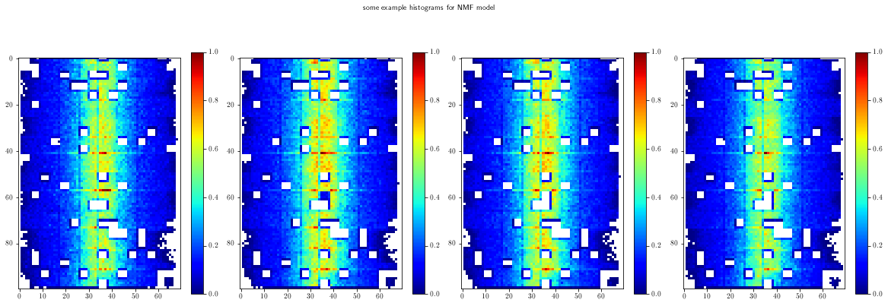

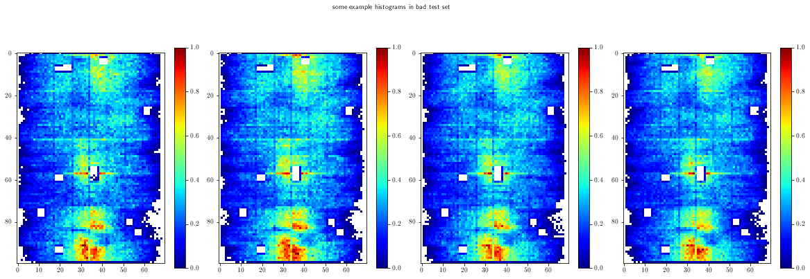
### build an NMF model
classifier = NMFClassifier.NMFClassifier( ncomponents=10, nmax=50 )
classifier.train( hists_ref )
/cvmfs/sft.cern.ch/lcg/views/LCG_101swan/x86_64-centos7-gcc8-opt/lib/python3.9/site-packages/sklearn/decomposition/_nmf.py:312: FutureWarning: The 'init' value, when 'init=None' and n_components is less than n_samples and n_features, will be changed from 'nndsvd' to 'nndsvda' in 1.1 (renaming of 0.26).
warnings.warn(("The 'init' value, when 'init=None' and "
/cvmfs/sft.cern.ch/lcg/views/LCG_101swan/x86_64-centos7-gcc8-opt/lib/python3.9/site-packages/sklearn/decomposition/_nmf.py:1090: ConvergenceWarning: Maximum number of iterations 200 reached. Increase it to improve convergence.
warnings.warn("Maximum number of iterations %d reached. Increase it to"
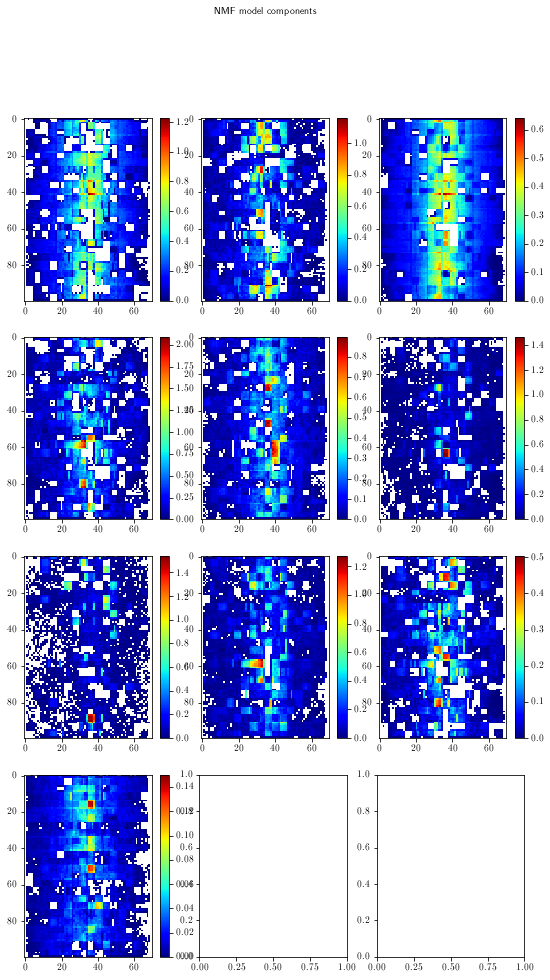
### optionally enlarge the test set using resampling
do_resampling = True
if do_resampling:
hists_good_ext = g2u.fourier_noise_nd(hists_good, nresamples=4, nonnegative=True,
stdfactor=10., kmaxscale=0.5, ncomponents=3)
print('shape of resampled good test set: {}'.format(hists_good_ext.shape))
hists_bad_ext = g2u.fourier_noise_nd(hists_bad, nresamples=40, nonnegative=True, stdfactor=5., kmaxscale=0.5, ncomponents=3)
print('shape of resampled bad test set: {}'.format(hists_bad_ext.shape))
shape of resampled good test set: (740, 100, 70)
shape of resampled bad test set: (600, 100, 70)
### perform the classification
classifier.set_nmax( 50 )
scores_good = classifier.evaluate( hists_good )
scores_bad = classifier.evaluate( hists_bad )
if do_resampling:
scores_good_ext = classifier.evaluate( hists_good_ext )
scores_bad_ext = classifier.evaluate( hists_bad_ext )
hists_good_appl = hists_good
hists_bad_appl = hists_bad
scores_good_appl = scores_good
scores_bad_appl = scores_bad
if do_resampling:
hists_good_appl = hists_good_ext
hists_bad_appl = hists_bad_ext
scores_good_appl = scores_good_ext
scores_bad_appl = scores_bad_ext
labels_good = np.zeros(len(scores_good_appl))
labels_bad = np.ones(len(scores_bad_appl))
scores = np.concatenate((scores_good_appl,scores_bad_appl))
labels = np.concatenate((labels_good,labels_bad))
_ = pu.plot_score_dist( scores, labels, nbins=100, normalize=True,
siglabel='Anomalous', sigcolor='r',
bcklabel='Training (mostly good)', bckcolor='g',
title='output score distributions for signal and background',
xaxtitle='output score', yaxtitle=None)
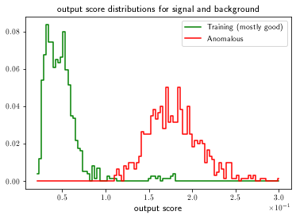
### check some random examples
nplot = 5
inds_good = np.random.choice(np.array(list(range(len(hists_good)))),size=nplot)
print('example histograms from good test set:')
for i in inds_good:
histlist = [hists_good[i],classifier.reconstruct(np.array([hists_good[i]]))[0]]
subtitles = ['good test histogram','NMF reconstruction']
title = 'index: {}, run: {}, lumisection: {}, MSE: {:.2E}'.format(i, runnbs_good[i],lsnbs_good[i],scores_good[i])
pu.plot_hists_2d(histlist, ncols=2, title = title, titlesize=20, subtitles=subtitles, subtitlesize=15)
plt.show()
inds_bad = np.random.choice(np.array(range(len(hists_bad))),size=nplot)
print('example histograms from bad test set:')
for i in inds_bad:
histlist = [hists_bad[i],classifier.reconstruct(np.array([hists_bad[i]]))[0]]
subtitles = ['bad test histogram','NMF reconstruction']
title = 'index: {}, run: {}, lumisection: {}, MSE: {:.2E}'.format(i, runnbs_bad[i],lsnbs_bad[i],scores_bad[i])
pu.plot_hists_2d(histlist, ncols=2, title = title, titlesize=20, subtitles=subtitles, subtitlesize=15)
plt.show()
example histograms from good test set:
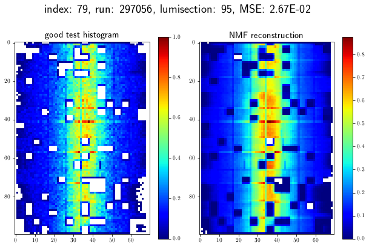
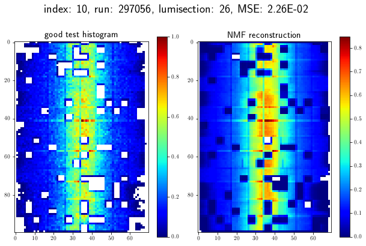
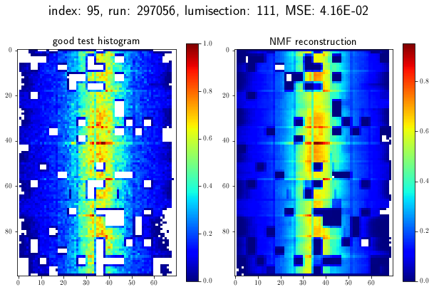
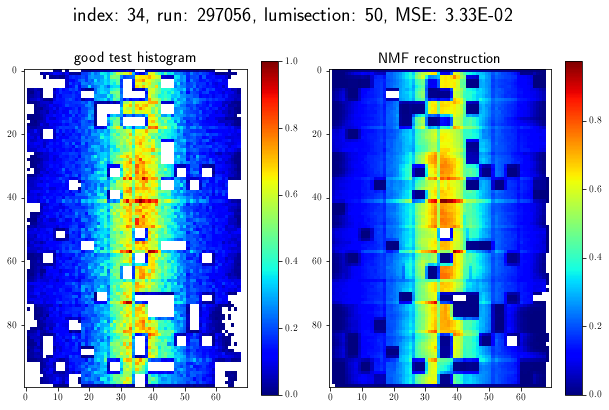
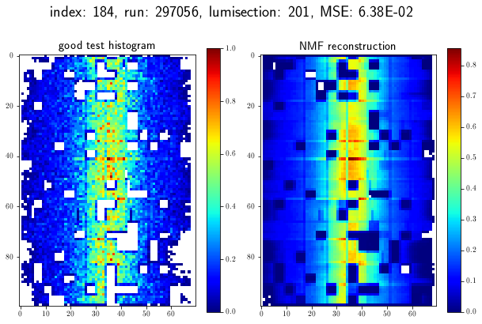
example histograms from bad test set:
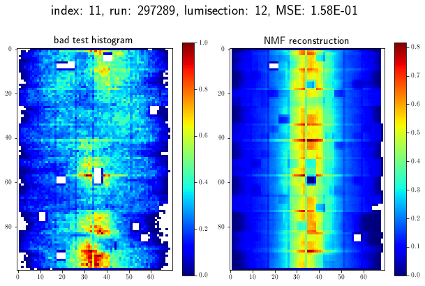
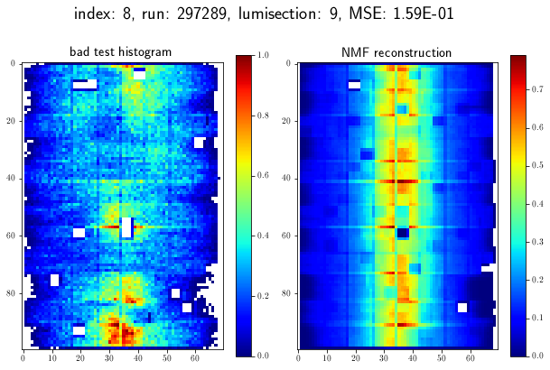

### check some examples in a given MSE range
mserange = (0.1,0.25)
test_histograms = hists_good
test_scores = scores_good
test_runnbs = runnbs_good
test_lsnbs = lsnbs_good
inds = np.where( (test_scores>mserange[0]) & (test_scores<mserange[1]) )[0]
print('{} out of {} histograms fall within this MSE range'.format(len(inds),len(test_scores)))
for indx in inds:
hist = test_histograms[indx]
title = 'index: {}, run: {}, lumisection: {}, MSE: {:.2E}'.format(indx, test_runnbs[indx], test_lsnbs[indx], test_scores[indx])
pu.plot_hist_2d(hist, title = title)
plt.show()
4 out of 185 histograms fall within this MSE range
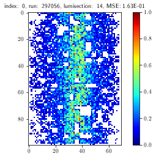
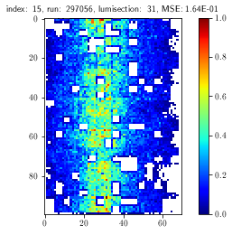
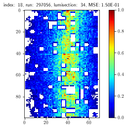
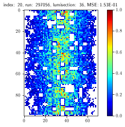
### extra: retrieve information from OMS on pileup, lumi and/or trigger rates
omsapi = get_oms_api()
# pileup and luminosity in good test set
oms_target_run_good = 297056
ls_info_good = get_oms_data( omsapi, 'lumisections', oms_target_run_good,
attributes=['lumisection_number','pileup','delivered_lumi','recorded_lumi'] )
# pileup and luminosity in bad test set
oms_target_run_bad = 297289
ls_info_bad = get_oms_data( omsapi, 'lumisections', oms_target_run_bad,
attributes=['lumisection_number','pileup','delivered_lumi','recorded_lumi'])
https://vocms0185.cern.ch/agg/api/v1/lumisections/?fields=lumisection_number,delivered_lumi,pileup,recorded_lumi&filter[run_number][EQ]=297056&page[offset]=0&page[limit]=1000
https://vocms0185.cern.ch/agg/api/v1/lumisections/?fields=lumisection_number,delivered_lumi,pileup,recorded_lumi&filter[run_number][EQ]=297056&page[offset]=0&page[limit]=1000
https://vocms0185.cern.ch/agg/api/v1/lumisections/?fields=lumisection_number,delivered_lumi,pileup,recorded_lumi&filter[run_number][EQ]=297289&page[offset]=0&page[limit]=1000
https://vocms0185.cern.ch/agg/api/v1/lumisections/?fields=lumisection_number,delivered_lumi,pileup,recorded_lumi&filter[run_number][EQ]=297289&page[offset]=0&page[limit]=1000
### make plots of OMS info
# plots for good run
ls_good = get_oms_response_attribute(ls_info_good,'lumisection_number')
pileup_good = get_oms_response_attribute(ls_info_good,'pileup')
lumi_del_good = get_oms_response_attribute(ls_info_good,'delivered_lumi')
lumi_rec_good = get_oms_response_attribute(ls_info_good,'recorded_lumi')
dcson_good = jsonu.isdcson( [oms_target_run_good]*len(ls_good), ls_good )
pu.plot_hists([pileup_good], colorlist=['b'], labellist=['pileup'], xlims=(ls_good[0],ls_good[-1]),
title='pileup for good run', xaxtitle='lumisection number', yaxtitle='pileup',
bkgcolor=dcson_good,bkgcmap='cool')
pu.plot_hists([lumi_rec_good,lumi_del_good], colorlist=['g','b'], labellist=['recorded luminosity','delivered luminosity'], xlims=(ls_good[0],ls_good[-1]),
title='luminosity for good run', xaxtitle='lumisection number', yaxtitle='luminosity',
bkgcolor=dcson_good,bkgcmap='cool')
ls_bad = get_oms_response_attribute(ls_info_bad,'lumisection_number')
pileup_bad = get_oms_response_attribute(ls_info_bad,'pileup')
lumi_del_bad = get_oms_response_attribute(ls_info_bad,'delivered_lumi')
lumi_rec_bad = get_oms_response_attribute(ls_info_bad,'recorded_lumi')
dcson_bad = jsonu.isdcson( [oms_target_run_bad]*len(ls_bad), ls_bad )
pu.plot_hists([pileup_bad], colorlist=['b'], labellist=['pileup'], xlims=(ls_bad[0],ls_bad[-1]),
title='pileup for bad run', xaxtitle='lumisection number', yaxtitle='pileup',
bkgcolor=dcson_bad,bkgcmap='cool')
pu.plot_hists([lumi_rec_bad,lumi_del_bad], colorlist=['g','b'], labellist=['recorded luminosity','delivered luminosity'], xlims=(ls_bad[0],ls_bad[-1]),
title='luminosity for bad run', xaxtitle='lumisection number', yaxtitle='luminosity',
bkgcolor=dcson_bad,bkgcmap='cool')
(<Figure size 432x288 with 2 Axes>,
<AxesSubplot:title={'center':'luminosity for bad run'}, xlabel='lumisection number', ylabel='luminosity'>)
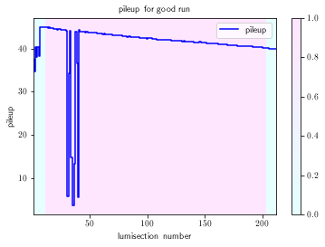

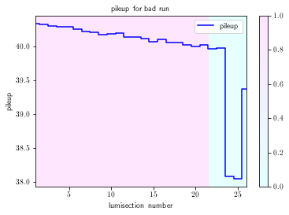
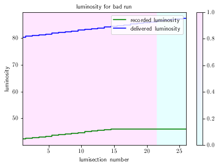
### plot particular lumisections based on the OMS info above
lsnbs_tocheck = list(range(25,40))
idx_oms = [np.where(np.array(ls_good)==lsnb)[0][0] for lsnb in lsnbs_tocheck]
idx_hist = [np.where(lsnbs_good==lsnb)[0][0] for lsnb in lsnbs_tocheck]
histlist = [hists_good[i] for i in idx_hist]
subtitles = ['lumisection: {}, pileup: {}'.format(lsnbs_tocheck[i],pileup_good[idx_oms[i]]) for i in range(len(lsnbs_tocheck))]
_ = pu.plot_hists_2d(histlist, subtitles=subtitles)
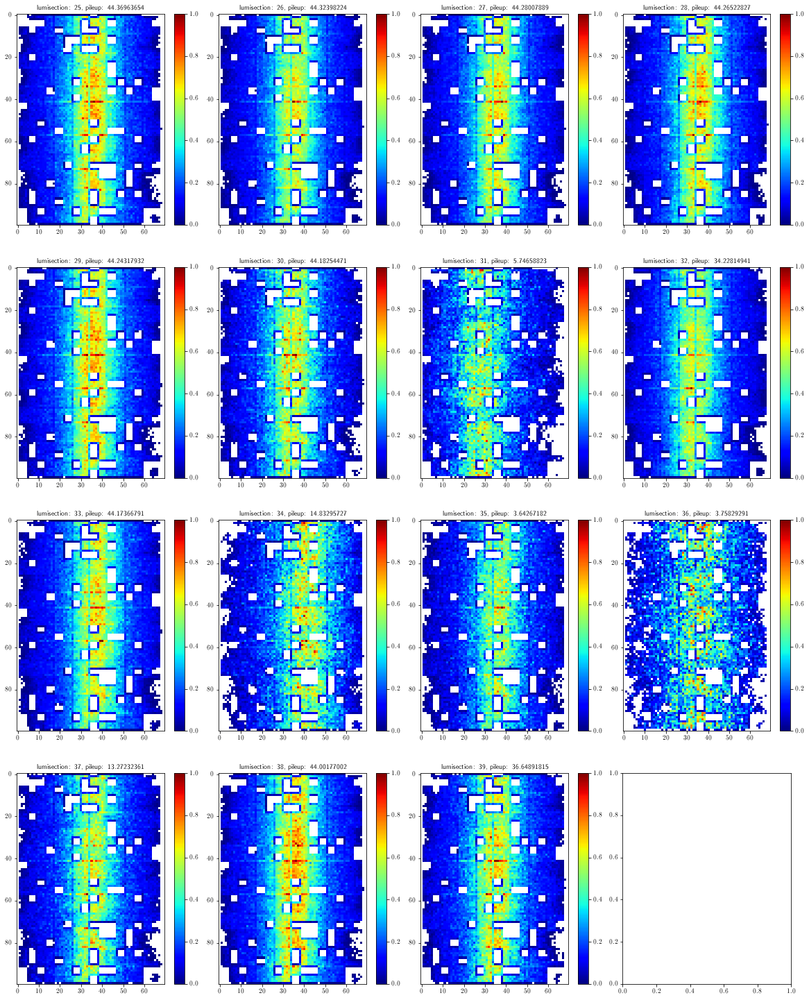